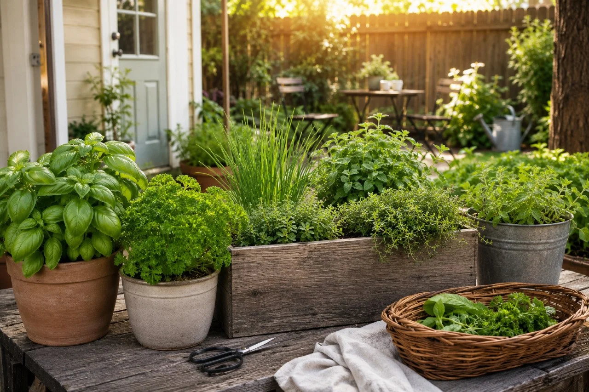

The Grocery Saver Herb Garden: 5 Herbs That Quietly Pay You Back All Season
A simple herb garden built around the herbs most people actually buy, replace, and use over and over again.
Most herb gardens are built around what sounds interesting. The Grocery Saver Herb Garden is built around something simpler: what herbs do people actually buy?
If a herb costs money every time you need it, and you use it regularly, it deserves a closer look. A few well-chosen herbs can quietly save money all season while making meals better at the same time. You do not need twenty herbs. You just need the right ones.

Existing QBL illustration- focus on herbs people actually buy often
- replace dozens of small grocery purchases over time
- grow a simple 4x4 bed or 5-container version
- clip what you need instead of buying full packages
- dry the extras when it makes sense
Good next reads:
The five-herb grocery saver garden
Typical store price: $2 to $4 per small package
Common use: pasta, pizza, salads, sandwiches, pesto
Why it saves money: A healthy basil plant can easily produce dozens of little store packages worth of leaves over a season.
QBL Rating: ⭐⭐⭐⭐⭐
Typical store price: $1 to $3 per bunch
Why it saves money: People buy parsley constantly for recipes, use a little, and throw the rest away. A backyard plant solves that problem.
QBL Rating: ⭐⭐⭐⭐⭐
Typical store price: $2 to $4 per package
Why it saves money: One established clump can produce cuttings for years and may be one of the highest value-per-square-foot herbs you can grow.
QBL Rating: ⭐⭐⭐⭐⭐
Typical store price: $2 to $4 fresh, $4 to $8 dried
Why it saves money: It is easy to dry, keeps producing, and even small harvests add up.
QBL Rating: ⭐⭐⭐⭐⭐
Typical store price: $2 to $4
Why it saves money: Thyme is expensive in tiny grocery packages, and it is perfect for clipping fresh in little amounts whenever you need it.
QBL Rating: ⭐⭐⭐⭐⭐
Real-world savings
Let’s keep this simple.
- basil purchased 12 times per year
- parsley purchased 10 times
- chives purchased 8 times
- oregano purchased 6 times
- thyme purchased 6 times
Average purchase price: $3
Annual spending: 36 purchases × $3 = about $108
The goal is not to save hundreds of dollars overnight. The goal is to replace dozens of small purchases that quietly add up year after year.
And that is before you even count dried herbs, wasted leftovers, or those little extra grocery trips because you only needed one herb.
QBL Grocery Saver Layout
Simple 4x4 bed
Or build the same basic idea with 5 containers if that fits your patio or side yard better.
Why these herbs won
These five are not the only good herbs. They are the ones that hit the best combination of usefulness, savings, and easy growing for normal everyday households.
| Herb | Usefulness | Savings | Easy to Grow |
|---|---|---|---|
| Basil | 5/5 | 5/5 | 4/5 |
| Parsley | 5/5 | 4/5 | 4/5 |
| Chives | 5/5 | 5/5 | 5/5 |
| Oregano | 4/5 | 5/5 | 5/5 |
| Thyme | 4/5 | 5/5 | 5/5 |
Go with basil, chives, and parsley.
That is probably the highest-value beginner combination if space is tight and you want the most everyday use.
What didn’t make the list
Mint
Great herb, but not used by everyone often enough to make the top grocery-saver cut.
Dill
Useful, but many people only use it once in a while instead of every week.
Rosemary
Excellent herb, but not used as frequently in a lot of households as the five above.
Next steps
A backyard does not have to make you rich to be valuable.
Sometimes it just quietly gives a little back every week. That is what this page is really about.